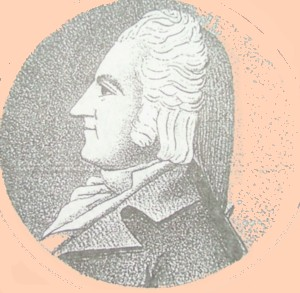

Elisha Jenkins
Elisha Jenkins was born in October 1769. He was the son of Quaker parents living in Nantucket, Rhode Island. He probably was the first prominent Quaker in Albany's history. 
In 1784, he came with his family to settle and establish what became the city of Hudson. The first four mayors of Hudson were members of his family. In 1795 and 1798, he was elected to the New York State Assembly representing Columbia County.
He married twice. His first wife was Sarah Greene (of Providence, Rhode Island) who joined the First Presbyterian church in Albany in 1805. That marriage seems to have produced a number of daughters. Following Sarah's death in 1835, he married a woman named Hannah.
In 1799, the assessment roll valued his lot in the first ward. In 1802, his house and lot on Pearl Street were noted on the second ward assessment. In 1810, his family of seven people was enumerated on the Albany census.
By 1813, he had settled permanently on Lion Street - today's Washington Avenue. At one time, he had an office on Quay Street. His kin also had joined Albany's mainline as in 1815, eight Jenkins-named households were listed in the city directory.
In 1801, he was named State Comptroller and served until 1806. In 1806, 1808, and 1811, he was appointed to the office of New York Secretary of State. During the War of 1812, he held the commission of Quartermaster General of the Northern Department. During those years, he also was an officer and/or trustee of a number of Albany-based institutions and organizations.
He is best known as a result of an incident in April 1807 when he was attacked on the street in Albany by Federalist partisan Solomon Van Rensselaer. At that time, Jenkins was a prominent Jeffersonian or Democratic-Republican and an apparently insufferable critic of Van Rensselaer. A subsequent legal action is said to have awarded Jenkins $2,500 in damages.
In July 1816, he succeeded Philip S. Van Rensselaer as mayor of Albany and served until 1819 when Van Renssselaer replaced him. After that, Jenkins returned to Hudson.
Throughout his adult life, he also was a drygoods merchant sometimes in the partnership of "Wendell & Jenkins" and other times with "Thomas Jenkins & Sons."
Elisha Jenkins died of "paralysis" in New York City on May 18, 1848. A few days later, he was buried in Hudson. He had lived more than seventy-eight years.
Engraving of Jenkins as printed in Albany Chronicles. From an engraving appearing in the Documentary History of New York.
Jenkins households in the city directory in 1815: